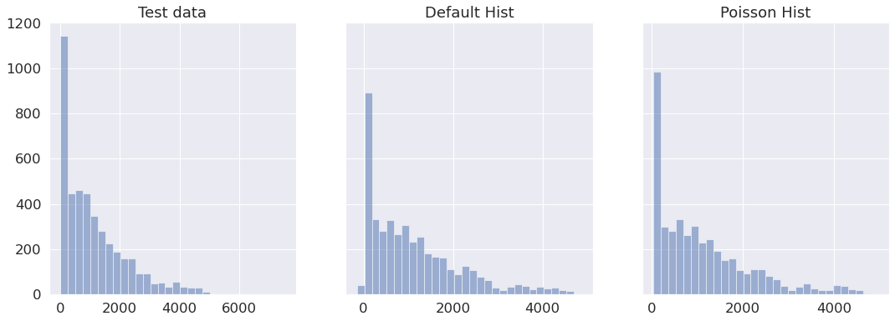
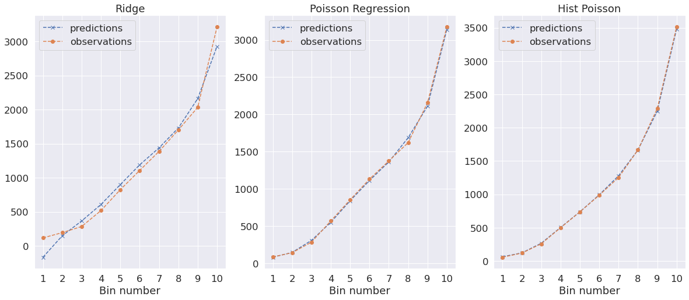
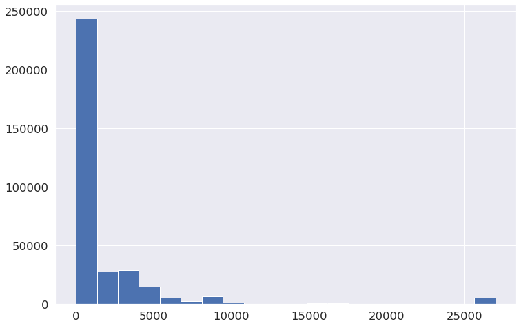
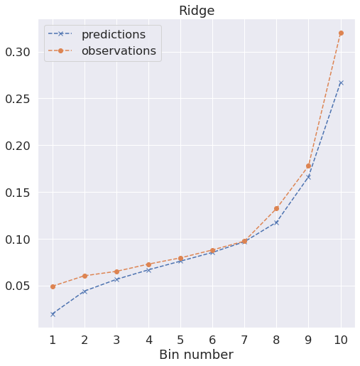
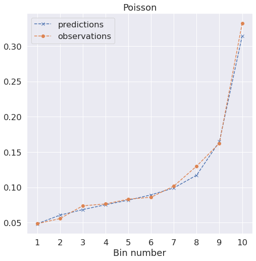
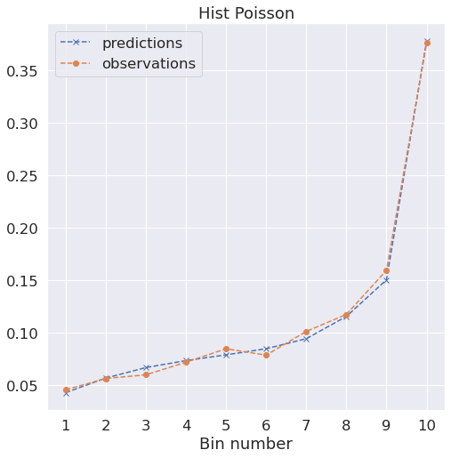

#code from https://github.com/thomasjpfan/ml-workshop-advancedimport numpy as np
import pandas as pd
import matplotlib.pyplot as plt
import seaborn as sns
import sklearn
sns.set_theme(font_scale=1.5, rc={'figure.figsize': [12, 8]})
sklearn.set_config(display='diagram')Load London Bike Data
from pathlib import Path
data_path = Path("data")
bikes_path = data_path / "london_bikes.csv"- “timestamp” - timestamp field for grouping the data
- “cnt” - the count of a new bike shares
- “t1” - real temperature in C
- “t2” - temperature in C “feels like”
- “hum” - humidity in percentage
- “windspeed” - wind speed in km/h
- “weathercode” - category of the weather
- “isholiday” - boolean field - 1 holiday / 0 non holiday
- “isweekend” - boolean field - 1 if the day is weekend
- “season” - category field meteorological seasons: 0-spring ; 1-summer; 2-fall; 3-winter.
bikes = pd.read_csv(bikes_path, parse_dates=['timestamp'])bikes.head()| timestamp | cnt | t1 | t2 | hum | wind_speed | weather_code | is_holiday | is_weekend | season | |
|---|---|---|---|---|---|---|---|---|---|---|
| 0 | 2015-01-04 00:00:00 | 182 | 3.0 | 2.0 | 93.0 | 6.0 | 3.0 | 0.0 | 1.0 | 3.0 |
| 1 | 2015-01-04 01:00:00 | 138 | 3.0 | 2.5 | 93.0 | 5.0 | 1.0 | 0.0 | 1.0 | 3.0 |
| 2 | 2015-01-04 02:00:00 | 134 | 2.5 | 2.5 | 96.5 | 0.0 | 1.0 | 0.0 | 1.0 | 3.0 |
| 3 | 2015-01-04 03:00:00 | 72 | 2.0 | 2.0 | 100.0 | 0.0 | 1.0 | 0.0 | 1.0 | 3.0 |
| 4 | 2015-01-04 04:00:00 | 47 | 2.0 | 0.0 | 93.0 | 6.5 | 1.0 | 0.0 | 1.0 | 3.0 |
bikes['timestamp'].head()0 2015-01-04 00:00:00
1 2015-01-04 01:00:00
2 2015-01-04 02:00:00
3 2015-01-04 03:00:00
4 2015-01-04 04:00:00
Name: timestamp, dtype: datetime64[ns]bikes['hr'] = bikes['timestamp'].dt.hourbikes['weather_code'].unique()array([ 3., 1., 4., 7., 2., 26., 10.])bikes['season'].unique()array([3., 0., 1., 2.])X = bikes[['t1', 't2', 'hum', 'wind_speed', 'weather_code', 'is_holiday', 'is_weekend', 'season', 'hr']]
y = bikes['cnt']Split data
from sklearn.model_selection import train_test_split
X_train, X_test, y_train, y_test = train_test_split(X, y, random_state=42)Column Transformer
from sklearn.compose import ColumnTransformer
from sklearn.preprocessing import OneHotEncoder
numerical_featurse = ['t1', 't2', 'hum', 'wind_speed', 'is_holiday', 'is_weekend', 'hr']
cat_features = ['weather_code', 'season']
ct = ColumnTransformer([
('numerical', 'passthrough', numerical_featurse),
('categorical', OneHotEncoder(sparse=False, handle_unknown='ignore'), cat_features)
])Pipeline
from sklearn.linear_model import PoissonRegressor
from sklearn.pipeline import Pipeline
from sklearn.preprocessing import StandardScaler
pois_reg = Pipeline([
('prep', ct),
('scaler', StandardScaler()),
('reg', PoissonRegressor())
])
pois_regPipeline(steps=[('prep',
ColumnTransformer(transformers=[('numerical', 'passthrough',
['t1', 't2', 'hum',
'wind_speed', 'is_holiday',
'is_weekend', 'hr']),
('categorical',
OneHotEncoder(handle_unknown='ignore',
sparse=False),
['weather_code',
'season'])])),
('scaler', StandardScaler()), ('reg', PoissonRegressor())])ColumnTransformer(transformers=[('numerical', 'passthrough',
['t1', 't2', 'hum', 'wind_speed', 'is_holiday',
'is_weekend', 'hr']),
('categorical',
OneHotEncoder(handle_unknown='ignore',
sparse=False),
['weather_code', 'season'])])['t1', 't2', 'hum', 'wind_speed', 'is_holiday', 'is_weekend', 'hr']
passthrough
['weather_code', 'season']
OneHotEncoder(handle_unknown='ignore', sparse=False)
StandardScaler()
PoissonRegressor()
pois_reg.fit(X_train, y_train);pois_reg.score(X_test, y_test)0.331281167666172This seems low what can we change?
from sklearn.compose import ColumnTransformer
from sklearn.preprocessing import OneHotEncoder
numerical_featurse = ['t1', 't2', 'hum', 'wind_speed', 'is_holiday', 'is_weekend']
cat_features = ['weather_code', 'season', 'hr']
ct = ColumnTransformer([
('numerical', 'passthrough', numerical_featurse),
('categorical', OneHotEncoder(sparse=False, handle_unknown='ignore'), cat_features)
])
pois_reg = Pipeline([
('prep', ct),
('scalar', StandardScaler()),
('reg', PoissonRegressor())
])
pois_reg.fit(X_train, y_train)Pipeline(steps=[('prep',
ColumnTransformer(transformers=[('numerical', 'passthrough',
['t1', 't2', 'hum',
'wind_speed', 'is_holiday',
'is_weekend']),
('categorical',
OneHotEncoder(handle_unknown='ignore',
sparse=False),
['weather_code', 'season',
'hr'])])),
('scalar', StandardScaler()), ('reg', PoissonRegressor())])ColumnTransformer(transformers=[('numerical', 'passthrough',
['t1', 't2', 'hum', 'wind_speed', 'is_holiday',
'is_weekend']),
('categorical',
OneHotEncoder(handle_unknown='ignore',
sparse=False),
['weather_code', 'season', 'hr'])])['t1', 't2', 'hum', 'wind_speed', 'is_holiday', 'is_weekend']
passthrough
['weather_code', 'season', 'hr']
OneHotEncoder(handle_unknown='ignore', sparse=False)
StandardScaler()
PoissonRegressor()
pois_reg.score(X_test, y_test)0.8156604730601431What about ridge?
from sklearn.linear_model import Ridge
ct = ColumnTransformer([
('numerical', 'passthrough', numerical_featurse),
('categorical', OneHotEncoder(sparse=False, handle_unknown='ignore'), cat_features)
])
ridge = Pipeline([
('prep', ct),
('scalar', StandardScaler()),
('reg', Ridge(random_state=42))
])
ridge.fit(X_train, y_train)Pipeline(steps=[('prep',
ColumnTransformer(transformers=[('numerical', 'passthrough',
['t1', 't2', 'hum',
'wind_speed', 'is_holiday',
'is_weekend']),
('categorical',
OneHotEncoder(handle_unknown='ignore',
sparse=False),
['weather_code', 'season',
'hr'])])),
('scalar', StandardScaler()), ('reg', Ridge(random_state=42))])ColumnTransformer(transformers=[('numerical', 'passthrough',
['t1', 't2', 'hum', 'wind_speed', 'is_holiday',
'is_weekend']),
('categorical',
OneHotEncoder(handle_unknown='ignore',
sparse=False),
['weather_code', 'season', 'hr'])])['t1', 't2', 'hum', 'wind_speed', 'is_holiday', 'is_weekend']
passthrough
['weather_code', 'season', 'hr']
OneHotEncoder(handle_unknown='ignore', sparse=False)
StandardScaler()
Ridge(random_state=42)
ridge.score(X_test, y_test)0.7264287681524049from sklearn.metrics import mean_squared_error
from sklearn.metrics import mean_poisson_deviance
def compute_metrics(y_true, y_pred, sample_weight=None):
mask = y_pred > 0
if (~mask).any():
n_masked, n_samples = (~mask).sum(), mask.shape[0]
print(f"WARNING: Estimator yields invalid, non-positive predictions "
f" for {n_masked} samples out of {n_samples}. These predictions "
f"are ignored when computing the Poisson deviance.")
y_true = y_true[mask]
y_pred = y_pred[mask]
if sample_weight is not None:
sample_weight = sample_weight[mask]
return {
'mse': mean_squared_error(y_true, y_pred, sample_weight=sample_weight),
'mean poisson deviance': mean_poisson_deviance(y_true, y_pred, sample_weight=sample_weight)
}Compute metrics
ridge_pred = ridge.predict(X_test)
compute_metrics(y_test, ridge_pred)WARNING: Estimator yields invalid, non-positive predictions for 403 samples out of 4354. These predictions are ignored when computing the Poisson deviance.{'mse': 347993.3878355729, 'mean poisson deviance': 254.31140084177204}poisson_pred = pois_reg.predict(X_test)
compute_metrics(y_test, poisson_pred){'mse': 273873.6171595357, 'mean poisson deviance': 181.15334073868877}Plotting the prediction distrubutions
fig, (ax1, ax2, ax3) = plt.subplots(1, 3, figsize=(18, 6), sharey=True)
ax1.hist(y_test, bins=30, alpha=0.5)
ax1.set_title("Test data")
ax2.hist(poisson_pred, bins=30, alpha=0.5)
ax2.set_title("Poisson predictions")
ax3.hist(ridge_pred, bins=30, alpha=0.5)
ax3.set_title("Ridge predictions")Text(0.5, 1.0, 'Ridge predictions')
# %load solutions/03-ex01-solutions.py
from sklearn.experimental import enable_hist_gradient_boosting
from sklearn.ensemble import HistGradientBoostingRegressor
hist = HistGradientBoostingRegressor(random_state=42)
hist.fit(X_train, y_train)
hist_pred = hist.predict(X_test)
compute_metrics(y_test, hist_pred)
hist_poisson = HistGradientBoostingRegressor(loss='poisson', random_state=42)
hist_poisson.fit(X_train, y_train)
hist_poisson_pred = hist_poisson.predict(X_test)
compute_metrics(y_test, hist_poisson_pred)
fig, (ax1, ax2, ax3) = plt.subplots(1, 3, figsize=(18, 6), sharey=True)
ax1.hist(y_test, bins=30, alpha=0.5)
ax1.set_title("Test data")
ax2.hist(hist_pred, bins=30, alpha=0.5)
ax2.set_title("Default Hist")
ax3.hist(hist_poisson_pred, bins=30, alpha=0.5)
ax3.set_title("Poisson Hist");WARNING: Estimator yields invalid, non-positive predictions for 22 samples out of 4354. These predictions are ignored when computing the Poisson deviance.
Calibration
from sklearn.utils import gen_even_slices
def _calibration_curve_weighted(y_true, y_pred, n_bins=10, sample_weight=None):
y_true = np.asarray(y_true)
y_pred = np.asarray(y_pred)
idx_sort = np.argsort(y_pred)
y_pred_bin = np.zeros(n_bins)
y_true_bin = np.zeros(n_bins)
if sample_weight is not None:
sample_weight = np.asarray(sample_weight)
for i, sl in enumerate(gen_even_slices(len(y_true), n_bins)):
if sample_weight is None:
y_pred_bin[i] = np.average(y_pred[idx_sort][sl])
y_true_bin[i] = np.average(y_true[idx_sort][sl])
else:
weights = sample_weight[idx_sort][sl]
y_pred_bin[i] = np.average(y_pred[idx_sort][sl], weights=weights)
y_true_bin[i] = np.average(y_true[idx_sort][sl], weights=weights)
return y_pred_bin, y_true_bin
def plot_calibration_curve_weights(y_true, y_pred, n_bins=10, ax=None, title="", sample_weight=None):
if ax is None:
fig, ax = plt.subplots()
y_pred_bin, y_true_bin = _calibration_curve_weighted(y_test, y_pred, sample_weight=sample_weight)
bin_centers = np.arange(1, len(y_pred_bin) + 1)
ax.plot(bin_centers, y_pred_bin, marker='x', linestyle="--", label="predictions")
ax.plot(bin_centers, y_true_bin, marker='o', linestyle="--", label="observations")
ax.set(xlabel="Bin number", xticks=bin_centers, title=title)
ax.legend()
return axfig, (ax1, ax2, ax3) = plt.subplots(1, 3, figsize=(20, 8))
plot_calibration_curve_weights(y_test, ridge_pred, ax=ax1, title="Ridge")
plot_calibration_curve_weights(y_test, poisson_pred, ax=ax2, title="Poisson Regression")
plot_calibration_curve_weights(y_test, hist_poisson_pred, ax=ax3, title="Hist Poisson");
Claims dataset
claims_path = data_path / "claims.csv"
claims = pd.read_csv(claims_path)- ClaimNb: number of claims on the given policy;
- Exposure: total exposure in yearly units;
- Area: area code (categorical, ordinal);
- VehPower: power of the car (categorical, ordinal);
- VehAge: age of the car in years;
- DrivAge: age of the (most common) driver in years;
- BonusMalus: bonus-malus level between 50 and 230 (with reference level 100);
- VehBrand: car brand (categorical, nominal);
- VehGas: diesel or regular fuel car (binary);
- Density: density of inhabitants per km2 in the city of the living place of the driver;
- Region: regions in France (prior to 2016)
claims.head()| ClaimNb | Exposure | Area | VehPower | VehAge | DrivAge | BonusMalus | VehBrand | VehGas | Density | Region | |
|---|---|---|---|---|---|---|---|---|---|---|---|
| 0 | 0.0 | 1.00 | D | 4.0 | 11.0 | 42.0 | 64.0 | B2 | Regular | 856.0 | R24 |
| 1 | 0.0 | 0.18 | E | 10.0 | 12.0 | 35.0 | 100.0 | B1 | Regular | 4762.0 | R93 |
| 2 | 0.0 | 0.08 | E | 6.0 | 4.0 | 53.0 | 50.0 | B1 | Diesel | 3317.0 | R93 |
| 3 | 0.0 | 0.36 | A | 5.0 | 2.0 | 44.0 | 50.0 | B2 | Diesel | 35.0 | R52 |
| 4 | 0.0 | 0.60 | C | 4.0 | 0.0 | 32.0 | 85.0 | B12 | Diesel | 200.0 | R73 |
exposure = claims['Exposure']y = claims["ClaimNb"] / exposureX = claims.drop(["Exposure", "ClaimNb"], axis="columns")X.head()| Area | VehPower | VehAge | DrivAge | BonusMalus | VehBrand | VehGas | Density | Region | |
|---|---|---|---|---|---|---|---|---|---|
| 0 | D | 4.0 | 11.0 | 42.0 | 64.0 | B2 | Regular | 856.0 | R24 |
| 1 | E | 10.0 | 12.0 | 35.0 | 100.0 | B1 | Regular | 4762.0 | R93 |
| 2 | E | 6.0 | 4.0 | 53.0 | 50.0 | B1 | Diesel | 3317.0 | R93 |
| 3 | A | 5.0 | 2.0 | 44.0 | 50.0 | B2 | Diesel | 35.0 | R52 |
| 4 | C | 4.0 | 0.0 | 32.0 | 85.0 | B12 | Diesel | 200.0 | R73 |
Split data
X_train, X_test, y_train, y_test, exposure_train, exposure_test = train_test_split(
X, y, exposure, random_state=42)Train simple dummy regresor
from sklearn.dummy import DummyRegressor
dummy = DummyRegressor()
dummy.fit(X_train, y_train, sample_weight=exposure_train)DummyRegressor()
dummy_pred = dummy.predict(X_test)
compute_metrics(y_test, dummy_pred, sample_weight=exposure_test){'mse': 0.5307356741415867, 'mean poisson deviance': 0.6308647534621802}dummy_pred[:10]array([0.10038206, 0.10038206, 0.10038206, 0.10038206, 0.10038206,
0.10038206, 0.10038206, 0.10038206, 0.10038206, 0.10038206])Ridge
X['Density'].hist(bins=20);
from sklearn.pipeline import make_pipeline
from sklearn.preprocessing import FunctionTransformer, OneHotEncoder
from sklearn.preprocessing import KBinsDiscretizer
from sklearn.compose import ColumnTransformer
linear_model_preprocessor = ColumnTransformer(
[
("passthrough_numeric", "passthrough",
["BonusMalus"]),
("binned_numeric", KBinsDiscretizer(n_bins=10),
["VehAge", "DrivAge"]),
("log_scaled_numeric", FunctionTransformer(np.log, validate=False),
["Density"]),
("onehot_categorical", OneHotEncoder(handle_unknown='ignore'),
["VehBrand", "VehPower", "VehGas", "Region", "Area"]),
],
)linear_model_preprocessor.fit_transform(X_train)<254254x75 sparse matrix of type '<class 'numpy.float64'>'
with 2288282 stored elements in Compressed Sparse Row format>from sklearn.linear_model import Ridge
from sklearn.preprocessing import MaxAbsScaler
ridge = Pipeline([
("preprocessor", linear_model_preprocessor),
("scaler", MaxAbsScaler()),
("reg", Ridge(alpha=1e-6))])
ridge.fit(X_train, y_train, reg__sample_weight=exposure_train)Pipeline(steps=[('preprocessor',
ColumnTransformer(transformers=[('passthrough_numeric',
'passthrough',
['BonusMalus']),
('binned_numeric',
KBinsDiscretizer(n_bins=10),
['VehAge', 'DrivAge']),
('log_scaled_numeric',
FunctionTransformer(func=),
['Density']),
('onehot_categorical',
OneHotEncoder(handle_unknown='ignore'),
['VehBrand', 'VehPower',
'VehGas', 'Region',
'Area'])])),
('scaler', MaxAbsScaler()), ('reg', Ridge(alpha=1e-06))]) ColumnTransformer(transformers=[('passthrough_numeric', 'passthrough',
['BonusMalus']),
('binned_numeric', KBinsDiscretizer(n_bins=10),
['VehAge', 'DrivAge']),
('log_scaled_numeric',
FunctionTransformer(func=),
['Density']),
('onehot_categorical',
OneHotEncoder(handle_unknown='ignore'),
['VehBrand', 'VehPower', 'VehGas', 'Region',
'Area'])]) ['BonusMalus']
passthrough
['VehAge', 'DrivAge']
KBinsDiscretizer(n_bins=10)
['Density']
FunctionTransformer(func=)
['VehBrand', 'VehPower', 'VehGas', 'Region', 'Area']
OneHotEncoder(handle_unknown='ignore')
MaxAbsScaler()
Ridge(alpha=1e-06)
ridge_pred = ridge.predict(X_test)
compute_metrics(y_test, ridge_pred, sample_weight=exposure_test)WARNING: Estimator yields invalid, non-positive predictions for 866 samples out of 84752. These predictions are ignored when computing the Poisson deviance.{'mse': 0.5306782259705353, 'mean poisson deviance': 0.6051468688331222}fig, ax = plt.subplots(figsize=(8, 8))
plot_calibration_curve_weights(y_test, ridge_pred, ax=ax, title="Ridge", sample_weight=exposure_test);
# %load solutions/03-ex02-solutions.py
poission_reg = Pipeline([
("preprocessor", linear_model_preprocessor),
("scaler", MaxAbsScaler()),
("reg", PoissonRegressor(alpha=1e-12))])
poission_reg.fit(X_train, y_train, reg__sample_weight=exposure_train)
poisson_pred = poission_reg.predict(X_test)
compute_metrics(y_test, poisson_pred, sample_weight=exposure_test)
fig, ax = plt.subplots(figsize=(8, 8))
plot_calibration_curve_weights(y_test, poisson_pred, ax=ax, title="Poisson", sample_weight=exposure_test)<AxesSubplot:title={'center':'Poisson'}, xlabel='Bin number'>
# %load solutions/03-ex03-solutions.py
from sklearn.preprocessing import OrdinalEncoder
tree_preprocessor = ColumnTransformer(
[
("categorical", OrdinalEncoder(),
["VehBrand", "VehPower", "VehGas", "Region", "Area"]),
("numeric", "passthrough",
["VehAge", "DrivAge", "BonusMalus", "Density"]),
]
)
hist_poisson = Pipeline([
("preprocessor", tree_preprocessor),
("reg", HistGradientBoostingRegressor(loss="poisson", random_state=0))
])
hist_poisson.fit(X_train, y_train, reg__sample_weight=exposure_train)
hist_poisson_pred = hist_poisson.predict(X_test)
compute_metrics(y_test, hist_poisson_pred, sample_weight=exposure_test)
fig, ax = plt.subplots(figsize=(8, 8))
plot_calibration_curve_weights(y_test, hist_poisson_pred, ax=ax, title="Hist Poisson", sample_weight=exposure_test);